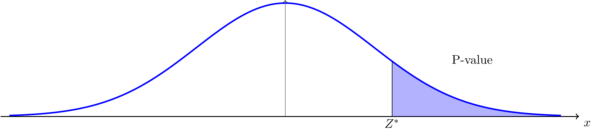
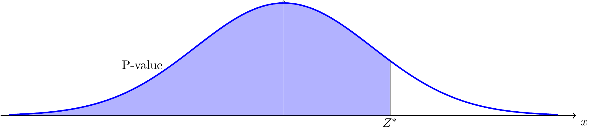
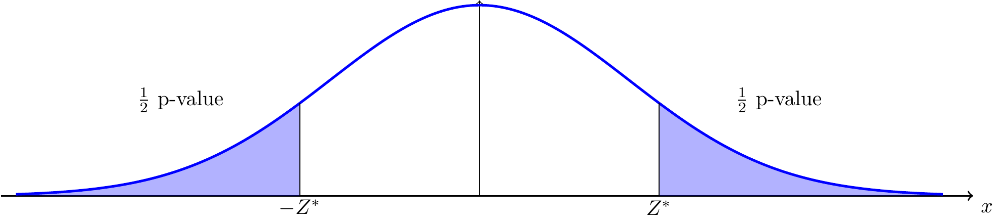

Chapter 12 One Sample Hypothesis Test on a Proportion and Variance
Inferential statistics is a powerful method for statistical analysis, because it allows people to analyze a lot parameters. Similarly to confidence interval, testing hypothesis can be applied to proportion and variance as well. Also, we use the exact same structure for one sample hypothesis test on a proportion and variance.
12.1 One Sample Hypothesis Test on a Proportion
Suppose we have assume the proportion of a criteria from a population
\(p\) is equal to our parameter \(p_0\) (null hypothesis \(H_0: p = p_0\)).
While, the question is: how do we know whether our assumption is correct
or not? We need to use testing hypothesis on proportion to verify.
Step 1. Stating the Structure of Testing Hypothesis
First of all, let’s proceed with a table to see all the cases:
| Cases | Null Hypothesis | Alternative Hypothesis |
| 1 | H0 : p = p0 | Ha : p > p0 |
| 2 | H0 : p = p0 | Ha : p < p0 |
| 3 | H0 : p = p0 | Ha : p ≠ p0 |
We are not going to proceed with all three cases in a single question.
You need to be able to identify which case of testing hypothesis are
going to be applied from question.
Step 2. Computing Test Statistics
After that we need to compute our test statistics, as the following definition provides:
Definition 12.1 The test statistics of one sample hypothesis test on a proportion is given by: \[Z^* = Z^* = \frac{\hat{p} - p_0}{ \sqrt{ \frac{p_0(1-p_0)}{n} } }.\] In this case, \(n\) means the sample size, \(\hat{p}\) is the parameter of the proportion of the population, which is calculated by \(\hat{p} = \frac{\text{number of successes in the sample}}{n}\). Also, the reference distribution is standard normal distribution: \(N(0,1)\).
Note that be careful while you are computing the test statistics,
because it directly affects the final answer.
Step 3. Finding the \(p\) - value
i. When is structure of testing hypothesis is \(H_0: p = p_0\), \(H_a: p > p_0\):

Figure 12.1: An illustration of hypothesis test on a proportion that \(H_0: p = p_0\), \(H_a: p > p_0\).
In case (i), calculating \(P[Z > Z_*]\) as your p-value. Then, comparing with significant level: \(\alpha\).
ii. When is structure of testing hypothesis is \(H_0: p = p_0\), \(H_a: p < p_0\):

Figure 12.2: An illustration of hypothesis test on a proportion that \(H_0: p = p_0\), \(H_a: p < p_0\).
In case (ii), calculating \(P[Z < Z_*]\) as your p-value. Then, comparing with significant level: \(\alpha\).
iii. When is structure of testing hypothesis is \(H_0: p = p_0\), \(H_a: p \neq p_0\):

Figure 12.3: An illustration of hypothesis test on a proportion that \(H_0: p = p_0\), \(H_a: p \neq p_0\).
In case (iii), calculating \(2\cdot P[Z > |Z_*|]\) as your p-value. Then,
comparing with significant level: \(\alpha\).
Step 4: Comparing P-value with \(\alpha\)-level
If p-value is less than \(\alpha\)-level, then we reject the null
hypothesis (\(H_0\)) and accept the alternative hypothesis (\(H_a\)).
Otherwise, If p-value is greater than \(\alpha\)-level, then we do not
reject the null hypothesis (\(H_0\)) and reject the alternative hypothesis
(\(H_a\)).
Step 5: Final Conclusion If we reject the null hypothesis, then we
conclude that: there is sufficient evidence to reject the null
hypothesis. If we do not reject the null hypothesis, then we conclude
that: there is insufficient evidence to reject the null hypothesis.
Conditions on One Sample Test Hypothesis on a Proportion
1. Random sample;
2. Independent sample: each observations are independent to others;
3. Sufficient sample.
12.2 One Sample Hypothesis Tests for a Variance
Now, let’s move to hypothesis tests for one variance, which follows the exact same idea from testing hypotheses on proportions. We are going to introduce that using steps as well.
Step 1: Stating the Structure of Testing Hypothesis
| Cases | Null Hypothesis | Alternative Hypothesis |
|---|---|---|
| 1 | \(H_0: \sigma^2 = \sigma_0^2\) | \(H_a: \sigma^2 > \sigma_0^2\) |
| 2 | \(H_0: \sigma^2 = \sigma_0^2\) | \(H_a: \sigma^2 < \sigma_0^2\) |
| 3 | \(H_0: \sigma^2 = \sigma_0^2\) | \(H_a: \sigma^2 \neq \sigma_0^2\) |
Step 2: Computing Test Statistics
Definition 12.2 Test Statistic of One Sample Hypothesis Test on a Variance
The test statistic of one sample hypothesis test on a variance is given by:
\[
\chi_*^2 = \frac{(n - 1)s^2}{\sigma_0^2} \sim \chi^2_{n - 1}
\]
Note that \(n\) represents the sample size, and \(s^2\) is the sample variance of the chosen sample.
Step 3: Decision Rules
Case 1: \(H_0: \sigma^2 = \sigma_0^2\) and \(H_a: \sigma^2 \neq \sigma_0^2\) (two-tailed alternative).
Reject \(H_0\) if \(\chi_*^2 > \chi^2_{n-1;\alpha/2}\) or \(\chi_*^2 < \chi^2_{n-1;1-\alpha/2}\).Case 2: \(H_0: \sigma^2 = \sigma_0^2\) and \(H_a: \sigma^2 > \sigma_0^2\) (upper-tailed).
Reject \(H_0\) if \(\chi_*^2 > \chi^2_{n-1;\alpha}\) or if \(P[\chi^2_{n-1} > \chi_*^2]\) is too small.Case 3: \(H_0: \sigma^2 = \sigma_0^2\) and \(H_a: \sigma^2 < \sigma_0^2\) (lower-tailed).
Reject \(H_0\) if \(\chi_*^2 < \chi^2_{n-1;1-\alpha}\) or if \(P[\chi^2_{n-1} < \chi_*^2]\) is too small.
Note: This test is not robust to departures from normality.
In case (i), where \(H_0: p = p_0\) and \(H_a: p > p_0\), calculate the p-value as \(P[Z > Z_*]\), then compare with significance level \(\alpha\).
In case (ii), where \(H_0: p = p_0\) and \(H_a: p < p_0\), calculate the p-value as \(P[Z < Z_*]\), then compare with significance level \(\alpha\).
In case (iii), where \(H_0: p = p_0\) and \(H_a: p \neq p_0\), calculate the p-value as \(2 \cdot P[Z > |Z_*|]\), then compare with \(\alpha\).
Step 4: Comparing P-value with \(\alpha\)-level
- If the p-value is less than \(\alpha\), reject the null hypothesis (\(H_0\)).
- If the p-value is greater than \(\alpha\), do not reject the null hypothesis (\(H_0\)).
Step 5: Final Conclusion
- If we reject \(H_0\), we conclude there is sufficient evidence to reject the null hypothesis.
- If we do not reject \(H_0\), we conclude there is insufficient evidence to reject the null hypothesis.
Conditions for One Sample Hypothesis Test on a Proportion
- Random sample;
- Independent observations;
- Sufficient sample size.